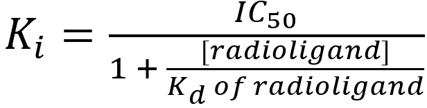

Self-Assessment Tool
The answer will be either one receptor subtype with a relative density of 100%, or more likely, a mixture of two receptor subtypes with relative proportions between 20% and 80% (in 10% increments).
SPIKES Approach
An analysis of the shape of each competition binding curve within a binding study can provide an initial indication as to whether there exists one or more receptors in the cell/tissue. For example, if a competition binding curve is steep sigmoidal then the competing ligand is binding to a population of receptors for which it has a single affinity – this may be to one receptor or more receptors. On the other hand, if a competition binding curve is sigmoidal shallow or multiphasic, then this is clearly indicative that the ligand is binding to more than one receptor with different affinities – i.e. the cell/tissue contains more than receptor, although further analysis is required to identify the receptor subtypes present. Thus, analysis of the shape of competition binding curves is informative (may indicate whether the cell/tissue contains more than one receptor subtype) but not definitive (doesn’t identify the receptor subtype(s) present).
Determining the position of each of the competition binding curves is crucial to the identification of the receptors present in the cell/tissue. This is because the position of the competition binding curve is (at least in part) dependent upon the affinity of the competing ligand for the receptor(s) present. As explained further below, by identifying the position of the competition binding curve and completing appropriate analyses, it is possible to calculate the affinity of the ligand for the receptor(s) present and ultimately determine which receptor subtypes are present.
The position of steep sigmoidal and shallow sigmoidal competition binding curves is typically expressed in terms of an IC50 value – the concentration of competing ligand that reduces %Specific binding of the radioligand by 50% – and can be read directly from the competition binding curve or determined using computer-assisted analysis by fitting the data to a one-site binding model. Biphasic competition binding curves (the most common form of multiphasic binding, that contain two clear phases of binding separated by a clear point of inflection) will have two IC50 values – IC50(1) for the first phase of binding (at the lower concentrations of the competing ligand) and IC50(2) for the second phase of binding (at the higher concentrations of the competing ligand). IC50(1) and IC50(2) can be read directly from the competition binding curve or determined using computer-assisted analysis by fitting the data to a two-site binding model.
IC50 values are not a reliable measure of the affinity of the competing ligand for the receptor – this is because the IC50 value depends upon not only on the affinity of the competing ligand but also on the concentration and affinity of the radioligand. The higher the concentration of radioligand used, the higher the concentrations of competing ligand required to outcompete the radioligand and the higher the IC50 value. Nevertheless, IC50 values can be used to calculate the absolute affinity of the competing ligand for the receptor (Ki) present by applying the Cheng-Prusoff (1973) equation:
where
Ki = the affinity of the competing ligand for the receptor(s) present(the ‘i’ indicates the affinity value was determined from a competition (inhibition) binding study)
IC50 = the concentration of competing ligand that reduces radioligand binding by 50% (determined from the competition binding curve)
[radioligand] = the concentration of radioligand used in the competition binding study
Kd of radioligand = the affinity of the radioligand for the receptors – typically determined from a previously-completed saturation binding study
Application of the Cheng-Prusoff equation to generate Ki values (true measure of affinity) is appropriate for IC50 values generated from steep sigmoidal and biphasic competition binding curves, but not shallow sigmoidal competition binding curves. That is, although a single IC50 value can be readily derived from a shallow sigmoidal curve, it represents the binding of the competing ligand to at least two receptor subtypes with different affinities – so the single Ki value derived from the IC50 value of a shallow sigmoidal curve is a ‘composite Ki value’ which does not faithfully represent the true affinity of the competing ligand for either receptor subtype (Note though that the ‘composite Ki value’ will lay between the two true Ki values). Calculating the two true Ki values for a shallow competition binding curve requires fitting the data to a two site binding model (to generate two IC50 values) and using the Cheng-Prusoff equation (to convert each IC50 value into a Ki value).
From the Cheng-Prusoff equation, notice that if the [radioligand] used is very low (compared to Kd of radioligand) then the quotient [radioligand]/Kd of radioligand approaches zero, the value of the denominator approaches 1, and the Ki value approximates the IC50 value. That is, when the [radioligand] << Kd of radioligand then the visually-determined IC50 value (read directly from the competition binding curve) can be used as a good approximation of the Ki value for the competing ligand.
In SPIKESmate, the [radioligand] << Kd of radioligand, and thus the logIC50 values obtained directly from the competition binding curves can be used as a direct approximation of the affinity (logKi value) of the ligand for the receptor(s) present (i.e. no need to apply the Cheng-Prusoff equation).
As mentioned above, the Ki value is a measure of the affinity of the competing ligand for the receptor – it is often expressed as a –logKi value. The Ki value is determined by applying the Cheng-Prusoff equation to the IC50 values read/determined from the competition binding curve, as indicated above. The units of the Ki value are molar concentration, consistent with the idea that the Ki value is the concentration of ligand that will occupy 50% of receptors in the absence of any competing ligand. Thus, the lower the Ki value, the higher the affinity of the ligand for the receptor.
Comparison of the –logKi values obtained for a range of receptor-selective competing ligands in a competition binding study to their known –logKi values (obtained from competition binding studies using pure populations of recombinant human M receptor subtypes), together with a process of elimination and summation can be used to determine which M receptor subtypes are present in a cell/tissue.
The comparison involves determining the absolute difference between the single –logKi value obtained for a competing ligand in a cell/tissue to each of the known –logKi values for that competing ligand at each of the receptor subtypes (e.g. M1, M2, M3, M4 and M5). If for any of the comparisons, the absolute difference in –logKi values is 1.0 unit then it is highly unlikely that any of those receptor subtypes are present in the cell/tissue.
For example, a competition binding study determined that the –logKi value of MT-3 in a cell/tissue was 6.3. This value of 6.3 is then compared to the known –logKi values of MT-3 at M1, M2, M3, M4 and M5 receptors (6.7, 5.9, 6.0, 8.1 and 6.0, respectively) – providing absolute differences of 0.4, 0.4, 0.3, 1.8 and 0.3. Of these differences only the difference of 1.8 at the M4 receptor subtype is ≥ 1.0 unit. The conclusion drawn from the MT-3 competition binding curve (and –logKi value of 6.3) is that the cell/tissue does not contain a significant population of M4 receptors – i.e. the use of MT-3 has enabled us to eliminate the possibility that the cell/tissue contains M4 receptors. Although MT-3 has thus been useful in the example to eliminate the M4 receptor subtype, it does not provide any definitive additional information regarding which receptor(s) are present – there could be any combination of M1, M2, M3 and/or M5 receptors present. Determination of which receptor subtypes are present requires applying this elimination process to the –logKi values obtained visually to a range of other receptor-selective ligands (e.g. potentially to each of pirenzepine, methoctramine, darifenacin and S-secoverine) until all receptor subtypes have been eliminated except for the receptor subtypes present.
Only relatively rarely can the use of a –logKi value obtained from a single competing ligand successfully identify which receptor is present in a cell/tissue – that is, only in the instance where the competing ligand is highly selective for the single receptor present (e.g. MT-3 binding to a cell/tissue containing a pure population of M4 receptors, S-secoverine binding to a cell/tissue containing a pure population of M5 receptors or DAU-5884 binding to a cell/tissue containing a pure population of M2 receptors).
In the Elimination process, each different competing ligand may be able to eliminate one or more receptor subtypes as having been present within the cell/tissue. By using the information obtained from ALL the competing ligands (Summation), a concerted process of elimination should leave just those receptors that are present in the cell/tissue not being eliminated. Illustrations of how the SPIKES approach can be used to determine which receptors are present in a particular cell/tissue are presented in the worked Examples #1 - #7.